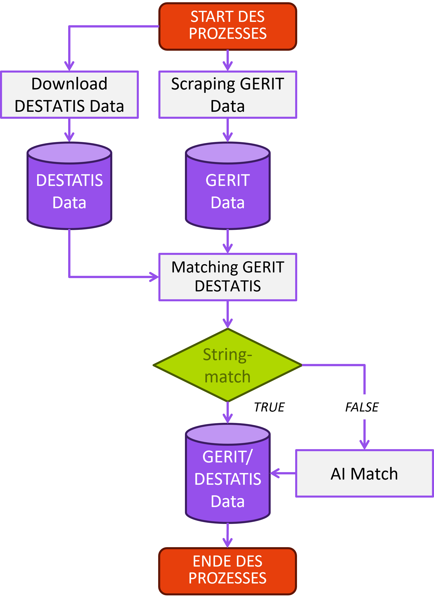
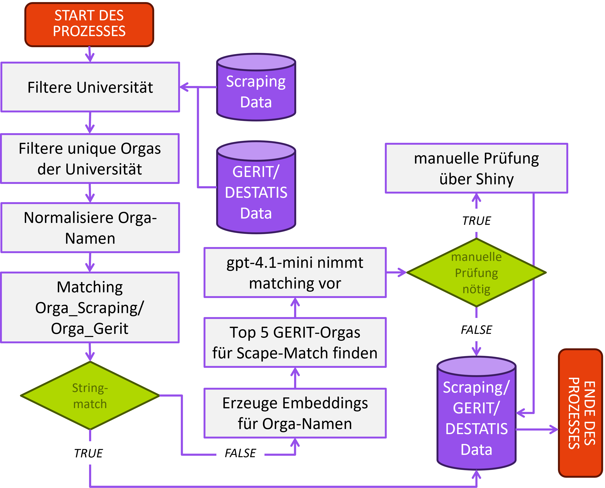

Matching Prozess
Voraussetzungen
Um das Matching der Scraping-Daten mit denen von GERIT gewährleisten zu können, müssen in einem ersten Schritt die Daten von GERIT gescrapt werden.
Dies geschieht mit: TODO
Weiterhin müssen die DESTATIS-Daten heruntergeladen werden. Diese können hier gefunden werden: TODO
Liegen die Daten vor, werden sie zusammengespielt. Da ein direkter String-Match der Lehr- und Forschungsbereiche nicht immer möglich ist, wird auch hier auf den AI-Match-Workflow zurückgegriffen. Dies erspart uns das jährliche Anpassen von Regex-Patterns beim Matching und harmonisiert so den Workflow.
Folgende Grafik illustriert den Workflow:

Matching - Der Prozess Schritt für Schritt

1. Nutzer und Eingabedaten vorbereiten
Der Workflow ermittelt zuerst den aktuellen Nutzernamen ueber
current_username(). Dafuer werden die Umgebungsvariablen
USERNAME, USER und LOGNAME
geprueft. Der Name landet spaeter in Dateinamen und Metadaten.
df_scraped wird in ein Tibble umgewandelt. Die
eigentliche Matching-Spalte wird spaeter in organisation
umbenannt, egal wie sie urspruenglich hiess, solange
organisation_col korrekt gesetzt ist.
2. GERIT-DESTATIS-Daten fuer eine Hochschule laden
prepare_gerit_data(name_gerit) liest
standardmaessig:
data/GERIT_DESTATIS_data.rdsDabei passiert Folgendes:
- Die Datei wird geladen und in ein Tibble umgewandelt.
- Falls noetig, werden alte bzw. alternative Spaltennamen
vereinheitlicht:
Hochschul_Namewird zuHS,Gerit_Orgawird zuEinrichtung. - Fehlende optionale Spalten werden mit
NAangelegt, zum BeispielFachgebiet_Gerit_1bisFachgebiet_Gerit_6,Faechergruppen_IDsundLUF_Namen. - Pflichtspalten werden geprueft:
HSundEinrichtung. -
name_geritmuss exakt inHSvorkommen. Wenn nicht, gibt die Funktion alle erlaubten Hochschulnamen aus und bricht ab. - Die GERIT-Tabelle wird auf genau diese Hochschule gefiltert.
- Eine
gerit_IDwird erzeugt oder vorhandene IDs werden als Integer aufbereitet. -
gerit_cleanedwird als normalisierte Variante vonEinrichtungerzeugt. -
unique_name_for_einrichtungmarkiert, ob ein Einrichtungsname innerhalb der Hochschule eindeutig ist.
Diese gefilterte GERIT-Tabelle ist die Referenzmenge fuer alle folgenden Schritte.
3. Gescrapte Organisationen extrahieren
extract_scraped_organisations()
arbeitet auf df_scraped und erzeugt eine
Organisationstabelle auf eindeutiger Organisations-Ebene.
Dabei passiert Folgendes:
- Spaltennamen werden kleingeschrieben.
- Die konfigurierte Organisationsspalte wird intern
organisationgenannt. - Alle Organisationswerte werden als Text behandelt.
- Semikolon-getrennte Mehrfachnennungen werden zerlegt. Aus
"Institut A; Institut B"werden zwei Organisationen. - Leere oder fehlende Organisationsstuecke werden entfernt.
- Identische Organisationsnamen werden dedupliziert.
- Fuer jede Organisation wird gespeichert, aus welchen urspruenglichen
Organisationsstrings sie kam. Diese Rueckverknuepfung steht in
organisation_names_for_matching_back. -
organisation_originalenthaelt den Originalwert. -
cleanedenthaelt eine normalisierte Textfassung. - Alle Matching-Spalten werden leer initialisiert.
- Jede eindeutige Organisation bekommt eine laufende
scraped_ID.
Die Normalisierung in normalize_text() ist bewusst
einfach und transparent:
- Text wird nach ASCII transliteriert.
- Alles wird kleingeschrieben.
- Klammern werden durch Leerzeichen ersetzt.
-
&wird zuund. - haeufige Strukturbegriffe wie
Institut,Professur,Department,Fachbereich,Seminar,Klinik,Abteilung,Lehrstuhl,Arbeitsgruppe,Zentrum,ArbeitsstelleundChairwerden entfernt. -
furwird entfernt. - Nicht-alphanumerische Zeichen werden durch Leerzeichen ersetzt.
- Mehrfache Leerzeichen werden bereinigt.
Beispielhaft kann aus:
Institut fuer Wirtschaftsinformatik (Lehrstuhl A)ungefaehr werden:
wirtschaftsinformatik a4. Deterministisches Matching
apply_deterministic_matches() versucht zuerst sichere
automatische Treffer, bevor Embeddings oder ein LLM genutzt werden.
Es gibt zwei deterministische Match-Typen:
-
direct: Der rohe Organisationsname entspricht exakt einem eindeutigen GERIT-Einrichtung-Wert. -
cleaned: Der normalisierte Organisationsname entspricht exakt einem eindeutigengerit_cleaned-Wert.
Wichtig fuer die Transparenz: Es werden nur eindeutige GERIT-Treffer automatisch uebernommen. Wenn derselbe GERIT-Name mehrfach vorkommt, wird er nicht deterministisch gematcht. Dadurch werden schnelle, aber riskante Mehrdeutigkeiten vermieden.
Bei einem deterministischen Treffer werden die GERIT-Informationen direkt in die Match-Spalten geschrieben:
gerit_IDgerit_organisationgerit_cleaned-
Fachgebiet_Gerit_1bisFachgebiet_Gerit_6 FaechergruppenFaechergruppen_IDsLUF_IDsLUF_Namenmatched = "yes"-
match_type = "direct"oder"cleaned" match_confidence = 1match_reason = "Deterministic ... match."needs_review = FALSE
5. Embedding-Kandidaten erzeugen
Alle Organisationen, die nach dem deterministischen Schritt noch
matched == "no" sind, gehen in generate_embedding_candidates().
Dieser Schritt erzeugt noch keine finale Entscheidung. Er erzeugt nur eine gerankte Kandidatenliste fuer das LLM.
So funktioniert es:
- Als GERIT-Kandidaten werden nur Eintraege genutzt, deren
unique_name_for_einrichtung == "ja"ist. - Fuer jeden offenen Scraping-Wert wird ein Embedding-Text gebaut. In
der Praxis ist das der rohe Organisationsname, mit Fallback auf
cleaned. - Fuer jeden GERIT-Kandidaten wird der Einrichtungsname als Embedding-Text genutzt.
- Beide Textmengen werden mit dem OpenAI Embedding-Modell eingebettet,
standardmaessig
text-embedding-3-large. - Fuer jede offene Organisation wird die Kosinusaehnlichkeit zu allen GERIT-Kandidaten berechnet.
- Die besten
top_kKandidaten werden behalten, standardmaessig 5. - Bei Score-Gleichstand wird stabil nach
Einrichtungsortiert.
Der Output dieses Schritts hat unter anderem:
scraped_IDorganisationcleanedgerit_IDEinrichtungscorecandidate_rankcandidate_source = "embedding"
Der score ist eine Kosinusaehnlichkeit der Embeddings.
Er ist nur ein Ranking-Signal. Er ist keine kalibrierte
Wahrscheinlichkeit und nicht die finale Match-Entscheidung.
GERIT-Embeddings werden standardmaessig lokal gecacht:
data/cache/gerit_embeddings_<embedding_model>.rdsDer Cache speichert Kombinationen aus Modellname, Eingabetext und Embedding. Bereits vorhandene GERIT-Embeddings werden wiederverwendet. Query-Embeddings der gescrapten Organisationen werden absichtlich nicht dauerhaft gecacht, weil sie laufabhaengig sind.
6. LLM-Entscheidung
match_organisations_with_llm()
verarbeitet nur noch offene Organisationen. Deterministische Matches
werden nicht erneut an das LLM geschickt.
Fuer jede offene Organisation sieht das LLM:
- den Organisationsnamen
- den bereinigten Organisationsnamen
- optional
no_courses, falls diese Spalte vorhanden ist - die
top_kGERIT-Kandidaten aus dem Embedding-Schritt - pro Kandidat die
gerit_ID, den NamenEinrichtungund denembedding_score
Das LLM darf nur eine von zwei Entscheidungen treffen:
select_candidateno_match
Bei select_candidate muss
selected_candidate_id exakt eine der erlaubten
gerit_IDs aus der Kandidatenliste sein. Jede andere ID ist
ungueltig und wird als Review-Fall behandelt.
Die Antwort wird strukturiert abgefragt. Erwartet werden:
decisionselected_candidate_idconfidencereasonneeds_review
Die Pipeline nutzt standardmaessig:
- Chat-Modell:
gpt-4.1-mini - Temperatur:
0 - Review-Schwelle:
review_confidence = 0.65
Die Konfidenz ist die Selbsteinschaetzung des Modells zwischen 0 und 1. Sie wird so interpretiert:
- Wenn
confidence < review_confidence, wirdneeds_review = TRUE. - Wenn
confidencefehlt, wird ebenfalls Review gesetzt. - Das vom Modell gelieferte
needs_reviewwird eingelesen, praktisch entscheidend ist aber mindestens die Schwellenwertlogik.
Wenn das LLM select_candidate waehlt und die ID gueltig
ist, werden die GERIT-Daten ueber lookup_match_from_gerit()
in die Match-Spalten uebernommen:
matched = "yes"match_type = "llm"match_confidence = confidencematch_reason = reason-
needs_reviewje nach Review-Logik
Wenn das LLM no_match waehlt, erzeugt
not_match_record() einen leeren Match-Datensatz:
- alle GERIT-Felder werden
NA matched = "no"-
match_type = "review"wenn Review noetig ist - sonst
match_type = "not_matchable" match_confidence = NAmatch_reason = reason
Wenn fuer eine Organisation keine Embedding-Kandidaten erzeugt
wurden, wird automatisch no_match mit Review gesetzt.
7. Automatischer Zwischenstand
Nach Deterministik, Embeddings und LLM entsteht eine Tabelle auf Organisationsebene:
match_result$organisation_matchesAusserdem gibt es:
match_result$candidates
match_result$llm_decisions
match_result$df_scraped_matcheddf_scraped_matched ist bereits auf die urspruenglichen
Scraping-Zeilen zurueckgespielt, aber noch vor einem optionalen
manuellen Review.
8. Optionaler manueller Review
run_matching_workflow()
zaehlt Review-Faelle so:
needs_review == TRUE | matched == "no"Wenn auto_review = TRUE und mindestens ein solcher Fall
existiert, startet review_matches()
eine Shiny-App.
Die Review-App bekommt:
- die offenen oder unsicheren Organisationen
- die Embedding-Kandidaten
- die vorbereiteten GERIT-Daten
- den Nutzernamen als
reviewed_by
Im Review kann pro Fall entschieden werden:
- vorhandenen Modell-Match bestaetigen
- einen anderen Kandidaten waehlen
- als kein Match markieren
Die App blockiert den Workflow, bis der Review abgeschlossen ist.
Danach schreibt apply_review_decisions()
die manuellen Entscheidungen zurueck in die Organisationsebene.
Wenn auto_review = FALSE, werden offene Review-Faelle
nicht aufgeloest. Sie bleiben im Output sichtbar.
9. Zurueckspielen auf die urspruenglichen gescrapten Daten
join_matches_back_to_scraped() fuehrt die
Organisationsebene wieder mit den urspruenglichen Kursdaten
zusammen.
Das ist besonders wichtig bei Mehrfachorganisationen:
Institut A; Institut BDie Zeile wird intern wieder in Komponenten zerlegt, jede Komponente wird in der Organisationstabelle nachgeschlagen und die Ergebnisse werden danach auf die urspruengliche Zeile aggregiert.
Die Aggregationslogik ist:
-
matched = "yes", wenn alle Komponenten der Zeile gematcht sind -
matched = "partial", wenn mindestens eine, aber nicht alle Komponenten gematcht sind -
matched = "no", wenn keine Komponente gematcht ist -
match_confidenceist die kleinste Konfidenz der Komponenten -
needs_review = TRUE, wenn irgendeine Komponente Review braucht oder irgendeine Komponente nicht gematcht ist - Mehrfachwerte wie
LUF_IDs,Faechergruppen_IDs,match_typeundmatch_reasonwerden eindeutig kollabiert und mit|bzw. passenden Trennzeichen zusammengefuehrt
Dieser Schritt erzeugt:
result$scraped_data_with_matchingund speichert dasselbe Objekt als .rds in
output_dir.
10. Optionaler Goldstandard-Vergleich
Wenn gold_data uebergeben wird, startet evaluate_against_goldstandard().
gold_data kann ein Data Frame oder ein Pfad zu einer
.rds-Datei sein. Die Spaltennamen werden in Kleinbuchstaben
umgewandelt. Erwartet werden:
- Organisationsspalte, standardmaessig
organisation matchingartlehr_und_forschungsbereichstudienbereichfaechergruppeluf_codestub_codefg_code
Der Vergleich passiert auf Organisationsebene. Die vorhergesagten
LUF_IDs aus GERIT werden mit
gold_data$luf_code verglichen.
Mehrfachcodes werden normalisiert:
- Trennung ueber
| - Leerzeichen werden entfernt
- Duplikate werden entfernt
- Reihenfolge wird ignoriert
Dadurch gelten zum Beispiel diese beiden Werte als gleich:
231|771
771|231Zurueckgegeben werden:
-
comparison: Detailtabelle pro Organisation -
metrics: Gesamtmetriken -
by_gold_matchingart: Metriken nach Goldstandard-matchingart
Die Gesamtmetriken sind:
n_organisationsn_with_gold_lufmatch_ratereview_rateluf_accuracy
Direkt danach ruft der Workflow check_mismatches()
auf und gibt die ersten Fehlzuordnungen auf der Konsole aus, falls es
welche gibt.
Output von run_matching_workflow()
Der Workflow gibt eine Liste zurueck:
list(
scraped_data_with_matching = ...,
matched_organisations = ...,
review_cases = ...,
goldstandard_evaluation = ...,
scraped_output_file = ...
)
scraped_data_with_matching
Die vollstaendigen urspruenglichen gescrapten Daten mit angespielten Matching-Spalten. Das ist der zentrale Arbeitsoutput.
matched_organisations
Alle Organisationen, die nach automatischem Matching und optionalem
Review matched == "yes" haben. Zusaetzlich werden Metadaten
gesetzt:
who_matchedwhen_matchedthis_matching_ishochschule
review_cases
Eine kompakte Tabelle der offenen oder unsicheren Faelle:
scraped_IDorganisation_names_for_matching_backorganisationmatch_typematch_confidencematch_reasonneeds_review
goldstandard_evaluation
NULL, wenn kein gold_data uebergeben wurde.
Sonst eine Liste mit comparison, metrics und
by_gold_matchingart.
debug
Nur vorhanden, wenn include_debug = TRUE. Dann enthaelt
der Output zusaetzlich:
gerit_datainput_scraped_dataautomatic_matching_resultreview_resultorganisation_matches_before_revieworganisation_matches_after_reviewembedding_candidatesllm_decisions
Fuer Fehlersuche, Audits und Nachvollziehbarkeit ist
include_debug = TRUE sehr hilfreich.
Bedeutung der wichtigsten Match-Spalten
| Spalte | Bedeutung |
|---|---|
gerit_ID |
Interne ID des ausgewaehlten GERIT-Eintrags |
gerit_organisation |
Name der gematchten GERIT-Einrichtung |
gerit_cleaned |
Normalisierte GERIT-Bezeichnung |
Fachgebiet_Gerit_1 bis
Fachgebiet_Gerit_6
|
Fachgebietsangaben aus GERIT/DESTATIS |
Faechergruppen |
Faechergruppe(n) aus GERIT/DESTATIS |
Faechergruppen_IDs |
IDs der Faechergruppen |
LUF_IDs |
Lehr- und Forschungsbereich-Code(s) |
LUF_Namen |
Lehr- und Forschungsbereich-Name(n) |
matched |
"yes", "partial" oder
"no"
|
match_type |
Entstehungsart des Matches, z. B. direct,
cleaned, llm, review,
not_matchable
|
match_confidence |
Konfidenz: 1 bei deterministischen Matches,
LLM-Konfidenz bei LLM-Matches, NA bei keinem Match |
match_reason |
Begruendung des deterministischen, LLM- oder Review-Entscheids |
needs_review |
TRUE, wenn der Fall manuell geprueft werden sollte oder
noch offen ist |
Welche Funktionen nutzt der Workflow?
run_matching_workflow()
├── current_username()
├── prepare_gerit_data()
├── match_scraped_organisations()
│ ├── extract_scraped_organisations()
│ │ ├── split_orgs_or_na()
│ │ ├── normalize_text()
│ │ ├── collapse_unique()
│ │ └── empty_match_columns()
│ ├── apply_deterministic_matches()
│ ├── generate_embedding_candidates()
│ │ ├── build_gerit_embedding_text()
│ │ ├── build_scraped_embedding_text()
│ │ └── generate_ranked_embedding_candidates()
│ │ └── fetch_openai_embeddings()
│ ├── match_organisations_with_llm()
│ │ ├── request_llm_candidate_decisions()
│ │ ├── lookup_match_from_gerit()
│ │ ├── not_match_record()
│ │ └── apply_match_record()
│ └── join_matches_back_to_scraped()
├── review_matches() optional bei auto_review = TRUE
│ ├── prepare_review_cases()
│ ├── run_review_app()
│ └── apply_review_decisions()
├── join_matches_back_to_scraped()
├── evaluate_against_goldstandard() optional bei gold_data != NULL
└── check_mismatches() optional bei gold_data != NULLWas der Workflow bewusst nicht tut
- Er matched nicht blind auf den hoechsten Embedding-Score. Der Score erzeugt nur Kandidaten.
- Er laesst das LLM nicht frei halluzinieren. Das LLM darf nur
Kandidaten aus der vorgelegten Liste waehlen oder
no_matchsagen. - Er uebernimmt deterministische Matches nur, wenn die GERIT-Seite eindeutig ist.
- Er versteckt Unsicherheit nicht: Niedrige LLM-Konfidenz, fehlende Kandidaten und offene Nicht-Matches werden als Review-Faelle sichtbar.
- Er speichert den wichtigsten Output frueh als
.rds, damit das Ergebnis auch nach spaeteren Fehlern im optionalen Goldstandard-Schritt verfuegbar bleibt.
Typische Parametrierung
result <- run_matching_workflow(
name_gerit = "Universitaet Beispielstadt",
df_scraped = scraped_data,
organisation_col = "organisation",
model = "gpt-4.1-mini",
top_k = 5,
embedding_model = "text-embedding-3-large",
embedding_batch_size = 100,
review_confidence = 0.65,
auto_review = TRUE,
output_dir = "matching-output",
matching_iteration = "erstkodierung",
include_debug = TRUE
)Wenn keine Shiny-App geoeffnet werden soll:
result <- run_matching_workflow(
name_gerit = "Universitaet Beispielstadt",
df_scraped = scraped_data,
auto_review = FALSE
)Mit Goldstandard:
result <- run_matching_workflow(
name_gerit = "Universitaet Beispielstadt",
df_scraped = scraped_data,
gold_data = "path/to/goldstandard.rds",
include_debug = TRUE
)
result$goldstandard_evaluation$metricsAbgrenzung zu anderen Funktionen
run_matching_workflow()
ist die transparente End-to-End-Funktion mit automatischem Matching,
optionalem Review, optionalem Goldstandard-Vergleich und Speicherung des
zentralen Outputs.
Daneben gibt es weitere Funktionen:
-
find_names()listet gueltige Hochschulnamen aus der GERIT-Datei. -
generate_candidate_matches()ist ein Komfort-Wrapper fuergenerate_embedding_candidates(). -
run_matching_pipeline()ist eine alternative Pipeline ohne interaktiven Review und ohne Goldstandard-Vergleich. -
finalise_matching()speichert Matching- und Review-Tabellen und wird vonrun_matching_pipeline()genutzt. -
import_matching_data()spielt bereits gespeicherte Matching-Ergebnisse nachtraeglich in Kurs-Rohdaten ein. -
next_matching_iteration()undparse_matching_metadata()helfen bei der Verwaltung mehrerer Matching-Runden.
GERIT-DESTATIS-Erstellung
Die GERIT- und DESTATIS-Daten werden durch
merge_gerit_with_DESTATIS_system.R zusammengefuehrt.
flowchart TD
n2(["Start des Prozesses"])
n4[("Gerit /<br>Destatis.rds")]
n3["MatchOrga_Scraping /<br>Orga_Gerit"]
subgraph Output
n5[("GERIT_DESTATIS_data")]
end
n2 --> n3
n4 --> n3
n3 --> n5GERIT DESTATIS Match